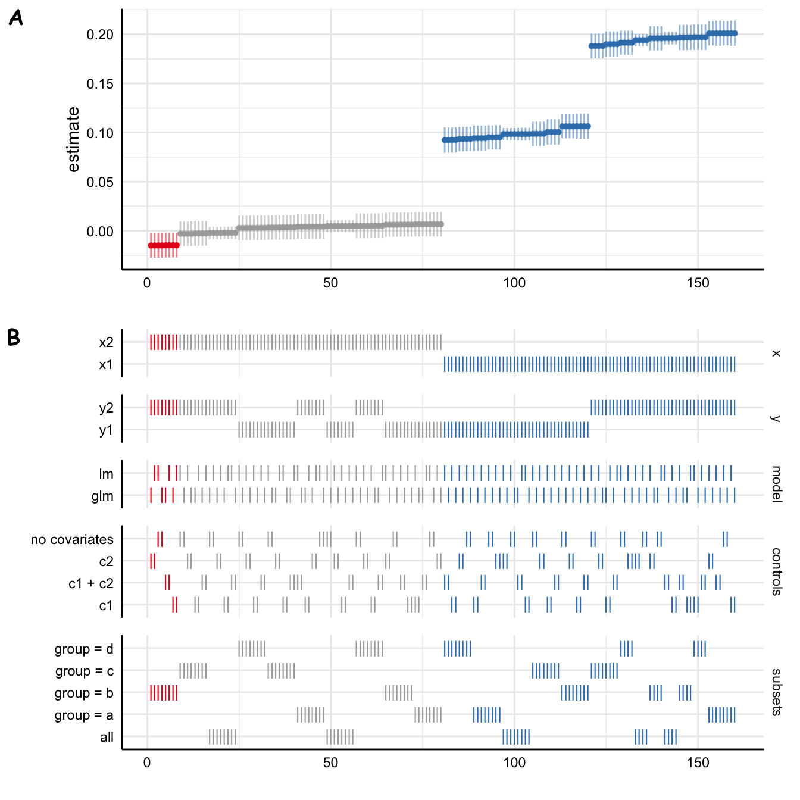
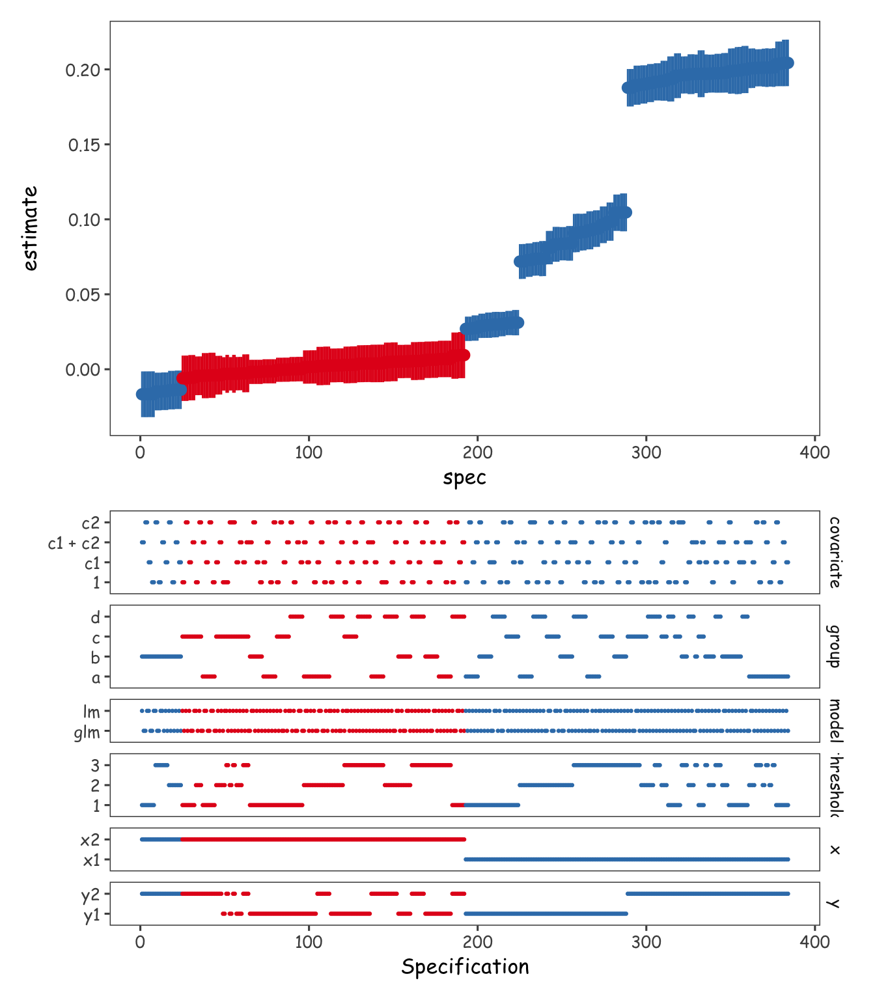

![]()

Introduction
Work in progress
This entry is an unfinished draft.
The results of statistical analyses often depend on analysts’ (sometimes arbitrary) decisions, such as which covariates to model or what subsets of data to analyse. Multiverse (sometimes called specification curve) analysis is a method whereby the analysts don’t only conduct and report the results from one model, but instead conduct all the relevant and plausible analyses and report all the results (Simonsohn, Simmons, and Nelson 2020; Steegen et al. 2016).
For example, Orben and Przybylski (2019) showed, through analyzing the same datasets in thousands of different ways, that conclusions regarding the association between the psychological well-being of adolescents and their digital technology use critically depend on (mostly) arbitrary decisions in how and which data are analysed (Figure 1).
This blog entry is about the technical aspects of conducting multiverse analyses in R. I have briefly examined the landscape of R packages that facilitate multiverse analyses, and found that none suited my needs. In this entry, I outline a general and flexible tidyverse-centric multiverse analysis pipeline. I eschew using external packages to maximize flexibility and speed (parallel processing).
Currently, I am aware of three R packages for conducting multiverse analyses. The multiverse package provides extensive functionality for conducting and reporting multiverse analyses, including a “domain specific language” for analyses and reporting. However, while powerful, the package seems somewhat complicated (for the use cases that I have in mind). Frankly, after briefly reviewing the documentation, I don’t know how to use it (but it seems cool!) mverse aims to make the multiverse package easier to use. I haven’t explored it much but it only seems to offer lm() and glm() models. specr (maybe most relevant for my use cases in psychology) provides a much simpler set of functions (with less flexibility, however).
Another downside of these packages is that they don’t provide options for parallel computations. Parallelization is quite important because multiverse analyses can include (tens, hundreds) of thousands of analyses and can therefore take a long time to complete. I started a pull request that aimed to add that functionality to specr, but along the way found that it wasn’t so easy to implement with the current specr syntax and codebase, and my limited R skills.
While thinking about how best to contribute to specr, I realized that multiverse analyses don’t necessarily need extra functions, but can be easily implemented in familiar data analysis pipelines (dplyr and %>%; depending on how familiar you are with the tidyverse). This entry is part of my journey of trying to figure out how to flexibly conduct multiverse analyses in parallel in R, and demonstrates a flexible syntax for parallelizing multiverse analyses with %>%lines.
I am not an expert in parallel processing by any means, so would love to know if you have any feedback on how I’ve implemented it below! Let me know in the comments 😄
Example multiverse analysis
Let’s start with a simple toy example with two outcomes, two predictors, and two covariates, and no prior reason to choose between specifications. That is, we think that y1 and y2 are equally likely to represent our outcome construct of interest, x1 and x2 are equally likely to represent the predictor construct, and we can’t choose if or how to include the covariates c1 and c2 in the model. Let’s load the required libraries and show the example data (Table 1):
Code
library(kableExtra)
library(scales)
library(ggthemes)
library(tictoc)
library(tidyverse)
theme_set(
theme_few(
base_family = "Comic Sans MS",
base_size = 12
)
)
k2 <- function(x) {
x %>%
kbl(digits = 2) %>%
kable_classic_2(html_font = "Arial", lightable_options = "striped", full_width = FALSE)
}
# Data generation
generate_data <- function(seed = NA, n = 1e5) {
if (!is.na(seed)) set.seed(seed)
dat <- tibble(
x1 = rnorm(n),
x2 = rnorm(n),
y1 = rnorm(n) + x1*.1,
y2 = rnorm(n) + x1*.2,
c1 = rnorm(n) + x1*.3,
c2 = rnorm(n),
group = sample(c("a", "b", "c", "d"), n, replace = TRUE)
)
}
dat <- generate_data(9)| x1 | x2 | y1 | y2 | c1 | c2 | group |
|---|---|---|---|---|---|---|
| -0.77 | 1.10 | -0.36 | -1.23 | 0.78 | -0.77 | d |
| -0.82 | -1.68 | -0.50 | -0.79 | -1.08 | -0.81 | b |
| -0.14 | -1.89 | -0.67 | 0.71 | -0.89 | -0.66 | b |
| -0.28 | -0.98 | 0.68 | -1.40 | 1.24 | -0.25 | c |
| 0.44 | -0.10 | 0.83 | 0.11 | -0.78 | -0.45 | d |
| -1.19 | -0.54 | -0.38 | 2.10 | 1.42 | 1.11 | b |
We can specify a fully crossed multiverse analysis over outcomes, predictors, and covariates, easily with specr. Also, to make the example a bit more interesting for later examples, I’ll estimate the model using two functions (lm() and glm() which in this case give the same results), and will time the function call using tictoc. Table 2 shows the first few rows of the results.
Code
library(specr)
tic()
results_specr <- run_specs(
df = dat,
y = c("y1", "y2"),
x = c("x1", "x2"),
model = c("lm", "glm"),
controls = c("c1", "c2"),
subsets = list(group = unique(dat$group))
)
toc()28.683 sec elapsedCode
results_specr %>%
head() %>%
.[,1:10] %>%
kbl(
digits = 2
) %>%
kable_classic_2(html_font = "Arial", full_width = FALSE)| x | y | model | controls | estimate | std.error | statistic | p.value | conf.low | conf.high |
|---|---|---|---|---|---|---|---|---|---|
| x1 | y1 | lm | c1 + c2 | 0.09 | 0.01 | 13.96 | 0.00 | 0.08 | 0.11 |
| x2 | y1 | lm | c1 + c2 | 0.00 | 0.01 | 0.48 | 0.63 | -0.01 | 0.02 |
| x1 | y2 | lm | c1 + c2 | 0.20 | 0.01 | 29.79 | 0.00 | 0.18 | 0.21 |
| x2 | y2 | lm | c1 + c2 | 0.01 | 0.01 | 0.79 | 0.43 | -0.01 | 0.02 |
| x1 | y1 | glm | c1 + c2 | 0.09 | 0.01 | 13.96 | 0.00 | 0.08 | 0.11 |
| x2 | y1 | glm | c1 + c2 | 0.00 | 0.01 | 0.48 | 0.63 | -0.01 | 0.02 |
Another great thing about this package is that you can easily draw specification curve figures (Figure 2)
Code
plot_specs(
results_specr,
choices = c("x", "y", "model", "controls", "subsets")
)
However, even with this modest data set and 160 specifications, this took a while.
I first decided to take a stab at parallelizing run_specs(). This turned out to be a bit of a dead end because I couldn’t make the parallelization fit in with how run_specs() works in the back-end.1 So instead of shoehorning a parallel back-end to specr, I decided to implement the parallelization in a tidy pipeline. This pipeline, with no additional dependencies (apart from the tidyverse!), works pretty well. It of course does not provide specr’s one-liners, but I believe the flexibility of this approach pays back for it.
1 It first creates a data frame with the specs, then the requested subsets, and then either applies run_spec() to all the datasets and specs using map(), or if no subsets were requested, runs the run_spec() on the specs only. So it wasn’t straightforward to parallelize over both data subsets and specs. Parallelizing over specs was simple.
Tidymultiverse
Specification table
The first step in a multiverse analysis is defining the grid of specifications.
The one difficulty here is that the dataset can also be part of the specifications (e.g. different outlier removal thresholds), but you can’t include the dataset in the table of specifications, because it would easily get too large and your computer would run out of memory (I learned this the hard way). So we will still iterate over the specs table, and pull relevant subsets of the data from the source data table in the function that iterates over the specs.
A flexible and easy way to declare the specifications is expand_grid(). This allows us to create tables that cross all the variables declared therein. I’ve chosen here to create a grid of variables.
Code
specs <- expand_grid(
x = c("x1", "x2"),
y = c("y1", "y2"),
covariate = c("x1", "x2"),
model = c("lm", "glm")
)| x | y | covariate | model |
|---|---|---|---|
| x1 | y1 | x1 | lm |
| x1 | y1 | x1 | glm |
| x1 | y1 | x2 | lm |
| x1 | y1 | x2 | glm |
| x1 | y2 | x1 | lm |
| x1 | y2 | x1 | glm |
But we could also just as well create a grid of formulas. Depending on your analysis, this might be a viable option
Code
expand_grid(
formula = c("y1 ~ x1", "y1 ~ x2", "y1 ~ x1 + c1"), # And so on
model = c("lm", "glm")
)We will stick with specifying variables instead, for this example. We can include subgroups as well:
Code
specs <- expand_grid(
x = c("x1", "x2"),
y = c("y1", "y2"),
covariate = c("x1", "x2"),
model = c("lm", "glm"),
# Include all distinct values of g
distinct(dat, group)
)Code
head(specs) %>% k2()| x | y | covariate | model | group |
|---|---|---|---|---|
| x1 | y1 | x1 | lm | d |
| x1 | y1 | x1 | lm | b |
| x1 | y1 | x1 | lm | c |
| x1 | y1 | x1 | lm | a |
| x1 | y1 | x1 | glm | d |
| x1 | y1 | x1 | glm | b |
Now each row in the table specifies 1. the modelling function (e.g. lm()), the subgroup, and the left-hand and right-hand side variables of the formula to put in the modelling function. Next, we need a function to also expand the covariates to all their combinations (I lifted much of this from the specr source, I found it surprisingly hard to write):
Code
#' Expand a vector of covariate names to all their combinations
#'
#' For example expand_covariate(c("age", "sex")) returns
#' c("1", "age", "sex", "age + sex")
#'
#' @param covariate vector of covariate(s) e.g. c("age", "sex")
#'
#' @return a character vector of all predictor combinations (incl. Intercept)
expand_covariate <- function(covariate) {
list(
"1",
do.call(
"c",
map(seq_along(covariate), ~combn(covariate, .x, FUN = list))) %>%
map(~paste(.x, collapse = " + "))
) %>%
unlist
}The specification table
Putting all this together, and also creating the formulas from y, x, and c, we have completed the first part of our pipeline, creating the specifications:
Code
specs <- expand_grid(
x = c("x1", "x2"),
y = c("y1", "y2"),
covariate = expand_covariate(c("c1", "c2")),
model = c("lm", "glm"),
distinct(dat, group)
) %>%
mutate(formula = paste0(y, " ~ ", x, " + ", covariate))Code
head(specs) %>% k2()| x | y | covariate | model | group | formula |
|---|---|---|---|---|---|
| x1 | y1 | 1 | lm | d | y1 ~ x1 + 1 |
| x1 | y1 | 1 | lm | b | y1 ~ x1 + 1 |
| x1 | y1 | 1 | lm | c | y1 ~ x1 + 1 |
| x1 | y1 | 1 | lm | a | y1 ~ x1 + 1 |
| x1 | y1 | 1 | glm | d | y1 ~ x1 + 1 |
| x1 | y1 | 1 | glm | b | y1 ~ x1 + 1 |
Estimating the specifications
Having set up the specifications, all that is left to do is to iterate over its rows, while at the same time use the correct subsets of data. While iterating, we will get the slope parameter from each row using tidy(). Here’s how it could look like. The arguments to pmap() require some explaining. We are creating a cell on each row of specs using pmap(). This will apply a function to all the named elements in list(). The function, then, is do.call(), which takes the name of the function (here, lm() or glm()) as the first argument, passed using the shorthand ..1. Then, we provide a list of arguments to the function. formula = ..2 takes the second element from the above list. data takes our main data frame dat, but filters it based on the groups, passed in with ..3 (group in the above list). We then pipe the results to tidy() to give a tibble of the estimated parameters, and slice() to just take the second row of the parameters (the slope parameter). The unnest() command at the end unnests the resulting tibble of results into the specs table.
Code
library(broom)
tic()
results_1 <- specs %>%
mutate(
out = pmap(
list(model, formula, group),
~do.call(
..1,
list(formula = ..2, data = filter(dat, group == ..3))
) %>%
tidy(conf.int = TRUE) %>%
slice(2)
)
) %>%
unnest(out)
toc()13.419 sec elapsedWe already see an improvement in the run-time of this pipeline over run_specs(), but note that my implementation does not estimate models for the complete data (subsets = all in specr), so it is not an entirely fair comparison.
Parallel estimation
Now that we have our pipeline set up, we can use multidplyr to easily (and safely!) parallelize our computations.
Note
Parallelization is hard and rarely works out of the box. Multidplyr works best when the individual computations are slow, because there is always some overhead in sending stuff back and forth between the nodes of the cluster. So the benefits will be even greater with larger data or slower models. The benefit of using multidplyr vs other parallel backends is that the user retains control over how to split up the computations. Your feedback is more than welcome (comments are open at the end of this post)!
To start, we load multidplyr, create a new cluster, and send the required libraries and variables to it.
Code
library(multidplyr)
# Create a new cluster
cluster <- new_cluster(8)
# Load libraries in and send data to nodes in the cluster
cluster_library(cluster, c("purrr", "broom", "tidyr", "dplyr"))
cluster_copy(cluster, c("dat"))Multidplyr integrates seamlessly into %>%lines by sending groups in the passed data to nodes in the cluster. It is therefore important to think a bit about how to group your data. For us, we want to equally divide the lm() and glm() calls across nodes, because glm() is considerably slower. If one node got all the glm() calls, we would have to wait for that one node even after the others had completed.
Here, it makes sense for us to group the data by formula and group. After grouping the data, we partition() it across the nodes in the cluster, run our computations, and then collect() the results back to our main R process. I also pass the tidy() results to slice(2) to just get the slope parameters.
Code
tic()
results_2 <- specs %>%
group_by(formula, group) %>%
partition(cluster) %>%
mutate(
out = pmap(
list(model, formula, group),
~do.call(..1, list(formula = ..2, data = filter(dat, .data[["group"]] == ..3))) %>%
tidy(conf.int = TRUE) %>%
slice(2)
)
) %>%
collect() %>%
ungroup() %>%
unnest(out)
toc()4.089 sec elapsedThis particular parallelization scheme (8 cores working on subsets defined by formula and group in dat) sped up our computations about 8 times compared to the original implementation, and about 4 times compared to the non-parallelized equivalent. Good stuff.
I also spot check that the results are consistent across the methods. I am a bit paranoid with what comes to parallel computation.
Code
bind_rows(
"specr" = results_specr %>%
filter(subsets != "all", x == "x1", y == "y1", model == "lm", controls == "c1") %>%
rename(covariate = controls, group = subsets) %>%
mutate(group = str_remove(group, "group = ")),
"tidymultiverse" = results_1 %>%
filter(term == x, x == "x1", y == "y1", model == "lm", covariate == "c1") %>%
select(-formula, -term),
"TM (parallel)" = results_2 %>%
filter(term == x, x == "x1", y == "y1", model == "lm", covariate == "c1") %>%
select(-formula, -term),
.id = "Method"
) %>%
select(Method, estimate, std.error, conf.low, conf.high, group) %>%
arrange(group) %>%
k2()| Method | estimate | std.error | conf.low | conf.high | group |
|---|---|---|---|---|---|
| specr | 0.09 | 0.01 | 0.08 | 0.11 | a |
| tidymultiverse | 0.09 | 0.01 | 0.08 | 0.11 | a |
| TM (parallel) | 0.09 | 0.01 | 0.08 | 0.11 | a |
| specr | 0.11 | 0.01 | 0.09 | 0.12 | b |
| tidymultiverse | 0.11 | 0.01 | 0.09 | 0.12 | b |
| TM (parallel) | 0.11 | 0.01 | 0.09 | 0.12 | b |
| specr | 0.10 | 0.01 | 0.09 | 0.11 | c |
| tidymultiverse | 0.10 | 0.01 | 0.09 | 0.11 | c |
| TM (parallel) | 0.10 | 0.01 | 0.09 | 0.11 | c |
| specr | 0.09 | 0.01 | 0.08 | 0.11 | d |
| tidymultiverse | 0.09 | 0.01 | 0.08 | 0.11 | d |
| TM (parallel) | 0.09 | 0.01 | 0.08 | 0.11 | d |
Complete tidymultiverse example
Let’s take this one step further and show an example of a complete pipeline. We still analyse the same dataset, but with an additional complexity: We are worried about outliers in the data, and would like to explore a multiverse over different data filtering thresholds (reject y1 values that are more than 1, 2, or 3 standard deviations from the mean). We can implement this in many ways. For example, we could create indicator variables that could be used as subgroups just as we have done with group so far. Another interesting alternative is to dynamically filter the source data in the function that iterates over the specs table. We take the latter route here.
Code
tic()
results <- expand_grid(
threshold = c(1, 2, 3),
x = c("x1", "x2"),
y = c("y1", "y2"),
covariate = expand_covariate(c("c1", "c2")),
model = c("lm", "glm"),
distinct(dat, group)
) %>%
mutate(formula = paste0(y, " ~ ", x, " + ", covariate)) %>%
group_by(formula, group) %>%
partition(cluster) %>%
mutate(
out = pmap(
list(model, formula, group, threshold),
~do.call(
..1,
list(
formula = ..2,
data = filter(
dat,
group == ..3,
between(y1, mean(y1) - sd(y1)*..4, mean(y1) + sd(y1)*..4)
)
)
) %>%
tidy(conf.int = TRUE) %>%
slice(2)
)
) %>%
collect() %>%
unnest(out) %>%
ungroup()
toc()8.295 sec elapsedOk, ok, that was too much in one go. Let’s focus on the key piece here: Applying the modelling function to each row of the specifications, on rows 15 to 27.
list(model, formula, group, threshold)- We pick these variables from the specification table to use as arguments in
do.call()
- We pick these variables from the specification table to use as arguments in
do.call(**..1**)- This means that we will run the function named in the first element in the above list,
model(which islmorglm), with the subsequent arguments
- This means that we will run the function named in the first element in the above list,
formula = ..2, use the second element from the list passed topmap()as theformulaargument ofmodel(e.g.lm())data = filter(...)- This is where the action is. We dynamically filter the source data frame
datbased on variables in the specification table. group == ..3means that we filter the data on group (the third argument in the list of arguments passed topmap())between(y1, mean(y1) - sd(y1)*..4, mean(y1) + sd(y1)*..4)we filter data indatbased on the fourth argumentthreshold. This line says to include onlyy1values that are within..4(=thresholdin the specification table) standard deviations from the mean.
- This is where the action is. We dynamically filter the source data frame
This syntax seems a bit hairy, but it is entirely general. The key point here is that we don’t have to learn any new syntax from a new package, but can simply keep applying tidyverse’s %>%lines with familiar dplyr verbs like filter(). The ugly aspect here is that we are sneaking in those %>%lines inside the do.call() function, which then iterates over the specification table.
A visualization
Code
library(patchwork)
results <- arrange(results, estimate) %>% mutate(spec = 1:n())
p_dash <- results %>%
select(spec, p.value, threshold:group) %>%
pivot_longer(-c(spec, p.value), values_transform = as.character) %>%
ggplot(aes(spec, value, col = p.value < 0.05)) +
scale_color_brewer(palette = "Set1") +
scale_x_continuous(
"Specification"
) +
geom_point(size = 0.5) +
facet_grid(rows = vars(name), scales = "free_y", space = "free_y") +
theme(axis.title.y = element_blank())
p_curve <- results %>%
ggplot(aes(spec, estimate, col = p.value < 0.05)) +
scale_color_brewer(palette = "Set1") +
geom_pointrange(aes(ymin = conf.low, ymax = conf.high), size = 0.5)
(p_curve / p_dash) &
theme(legend.position = "none")
References
Orben, Amy, and Andrew K. Przybylski. 2019. “The Association Between Adolescent Well-Being and Digital Technology Use.” Nature Human Behaviour 3 (2, 2): 173–82. https://doi.org/10.1038/s41562-018-0506-1.
Simonsohn, Uri, Joseph P. Simmons, and Leif D. Nelson. 2020. “Specification Curve Analysis.” Nature Human Behaviour, July, 1–7. https://doi.org/10.1038/s41562-020-0912-z.
Steegen, Sara, Francis Tuerlinckx, Andrew Gelman, and Wolf Vanpaemel. 2016. “Increasing Transparency Through a Multiverse Analysis.” Perspectives on Psychological Science, September. https://doi.org/10.1177/1745691616658637.
Reuse
Citation
BibTeX citation:
@online{vuorre2022,
author = {Matti Vuorre},
title = {Tidymultiverse},
date = {2022-11-30},
url = {https://vuorre.netlify.app/posts/parallel-multiverse},
langid = {en}
}
For attribution, please cite this work as:
Matti Vuorre. 2022. “Tidymultiverse.” November 30, 2022. https://vuorre.netlify.app/posts/parallel-multiverse.